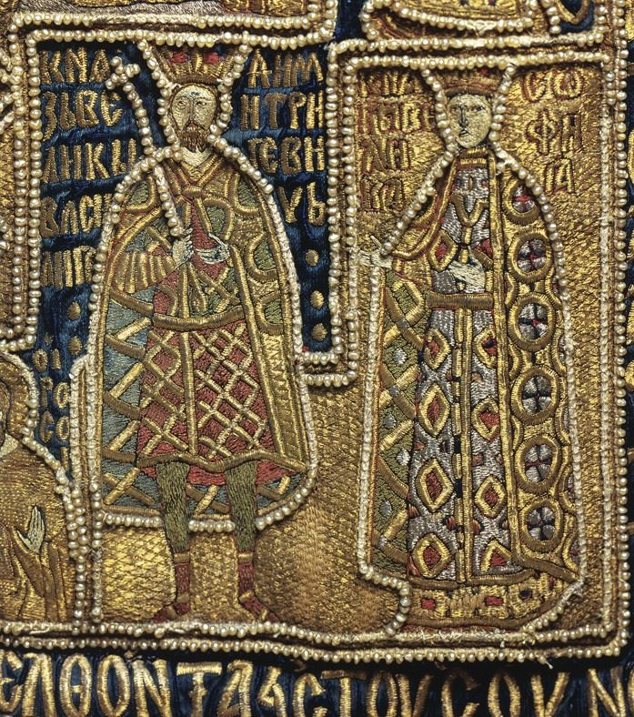

Sofija Vytautaitė¶
Summary¶
Sofija Vytautaitė (1371-1453), Vytautas’s only child in the record; named among the hostages demanded at Lyck (19 Jan 1390), she left Marienburg via Danzig and Pskov in autumn 1390 and married Vasily I of Moscow on 9 Jan 1391.
Sofija Vytautaitė

Sofija Vytautaitė · character — Image: Unknown author, CC BY-SA 4.0 via Wikimedia Commons¶

Type |
character |
Years |
c. 1371–1453 |
Status |
Historical record |
Note |
Grand Princess of Moscow; only child of Vytautas and Ona, regent of Moscow for Vasily II. |
Appearance & tells¶
A young woman who counts everything, because numbers are the one thing nobody can order her to feel: twelve wagons of dowry, one ship from Danzig, fifty-three Muscovite attendants, the miles gone and the miles left (Book II ch. 8). She is nineteen on the road to Moscow, has not cried since she parted from her mother at the Rastenburg gate, and knows she is “Kęstutis’s granddaughter, Vytautas’s daughter, the Muscovite prince’s betrothed”, names that nobody uses for Sofija herself. Round her neck, under her cloak, hangs one amber bead on a linen thread that Birutė gave her at nine. It is cold in the white stone of the Kremlin cathedral and warm by the river, where she can hear the sea in it.
As a wife she is watchful in a household where her husband sleeps with a knife under his pillow; as the regent of 1425 she is the one who finds that knife on the dead man’s bed and lays it on his chest. By 1446 she is “already old” and hears of her son’s blinding from a Riga merchant (Book V ch. 25).
Want · Need · Lie · Truth¶
Want (external) |
To be a person and not a pawn in two families’ ledgers; later to hold Moscow for her son Vasily II. |
Need (internal) |
To belong to herself (her own name) and to keep her father’s blood and her husband’s throne from destroying each other. |
Lie they believe |
Only what can be counted is safe: she counts dowries, wagons and miles to keep from feeling what she is being traded for. |
Truth they learn (or refuse) |
The bead warms to loyalty, not to counting: she rides between the camps at the Ugra, keeps the peace in her own body, and ends as the regent who saves the Kęstutaičiai line in Moscow. |
Arc by book¶
Book II (1388-1391). At seventeen her betrothal to Vasily is weighed like grain at her father’s Grodno court (ch. 4); she is one of the hostages named at Lyck (ch. 6); in the winter of 1390-91 she travels by sea from Marienburg via Danzig and Pskov to Moscow, receives Ona’s letter about Tautvilas’s death, and marries Vasily I on 9 Jan 1391 (ch. 8).
Book III (1406-1410). She rides between the armies of her husband and her father on the Ugra and makes the peace (ch. 10), and in December 1409 writes to him that Moscow will not move while he fights the Order (ch. 13).
Book IV (1418-1428). Learns of Ona’s death (ch. 9); in the winter of 1425 Vasily I dies and, under his testament, her father becomes guardian of the ten-year-old Vasily II. She is regent, and the Kęstutaičiai blood sits on the Muscovite throne, “the bitterest irony in the series” (ch. 15).
Book V (1430-1450). After Vytautas’s death she sends a second amber bead to lie at his tomb, “the first she gave her son” (ch. 2); in 1446 the news reaches Palanga that her son has been blinded (ch. 25). She dies in 1453 (the record), outliving her father by twenty-three years.
Power & magic¶
Tier 0, no gift and no bargain. Her only token is the amber bead from Birutė’s necklace, charged and anchored amber that answers to the sea and to the truth of whoever carries it, so it chills in consecrated stone and warms by running water; it is her private link to the Amber Queen and to Vytautas’s pebble. She pays no magical cost. Her work is political: she is the saga’s proof that the Pact’s line survives by marriage and patience, not by Kalba.
Record vs saga¶
[Historical record]: Hostage (Posilge via Grala; escorted by Ivan Olshanski); married 9 Jan 1391 (Trinity Chronicle); regent for Vasily II from 1425. The only recorded child of Vytautas.
[The saga’s invention]: Her letters in Book II ch. 8; the bead on Vytautas’s tomb (Book V).
Pronunciation¶
SO-fi-ja · IPA /ˈsɔfʲɪjɐ/ · English sound-alike “SOH-fih-yah”. The o is short because the name is a loan. Two women share it: Sofija Vytautaitė (Sophia of Lithuania, Sofya Vitovtovna in Moscow) and Sofija Alšėniškė (Sonka), Jogaila’s fourth wife. This entry is for the first.
Appearances¶
Book II: ch. 4, 6, 8 (her chapter), plus the afterword.
Book III: ch. 10 (her chapter), 13 (her letter).
Book IV: ch. 9 (Ona’s death), 15 (her chapter).
Book V: ch. 2 (the second bead), 25 (the news of the blinding).
The bead stays with Vasily II in Moscow (Book IV ch. 15); Birutė gave her the first when she was nine. The marriage date, 9 Jan 1391, is from the Trinity Chronicle.
Relations
Child of: Vytautas
Hostage of: Teutonic Order (1390–1390) — Left Marienburg via Danzig and Pskov for Moscow in autumn 1390.
Spouse: Vasily I of Moscow (1391–…)
Took part in: Treaty of Lyck; hostages demanded — Hostage (Posilge via Grala).
Timeline¶
Year |
Event |
Book |
|---|---|---|
1390-01-19 |
II · The Golden Shadow |
Connections¶
graph LR
ev_lyck_1390["Treaty of Lyck; hostages demanded"]
sofija["Sofija Vytautaitė"]
teutonic_order["Teutonic Order"]
vasily1["Vasily I of Moscow"]
vytautas["Vytautas"]
sofija -->|Spouse| vasily1
sofija -->|Took part in| ev_lyck_1390
sofija -->|Hostage of| teutonic_order
vytautas -->|Parent of| sofija
style sofija stroke-width:3px